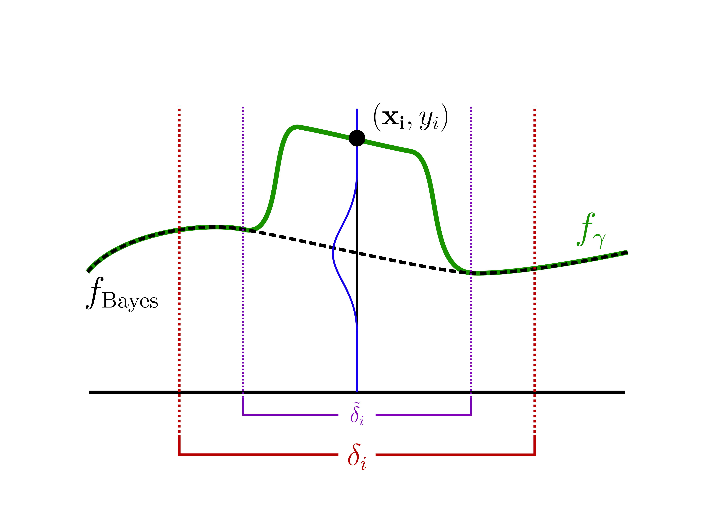
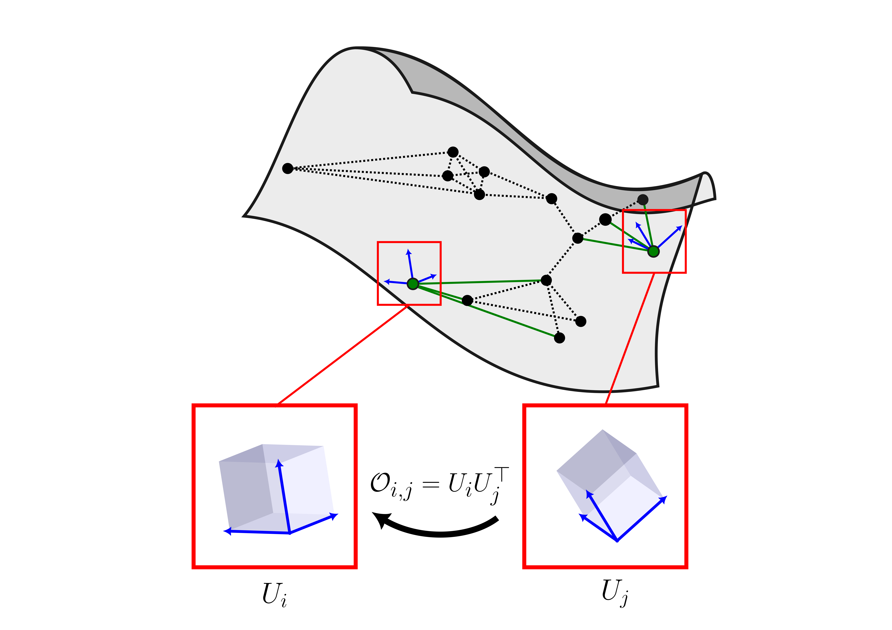
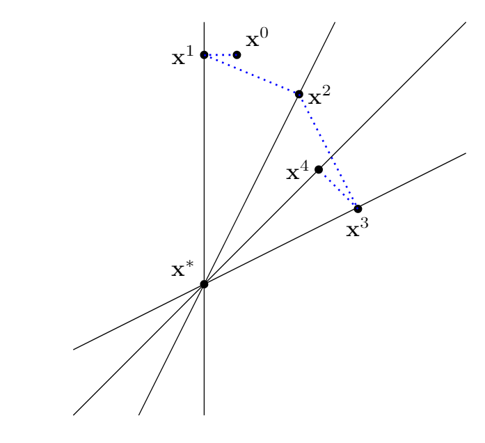

Many machine learning models can be described as functions which map input data to a prediction, depending on the parameters of the model (for example, coefficients in linear regression or the weights of a neural network). However, two models may make identical predictions despite having vastly different parameters. Much of the previous theory of machine learning focuses on parameterization, which may not be sufficient for deeper insights. Accordingly, I am interested in analyzing learning problems by directly understanding the properties of the functions themselves, rather than the parameters that define them.
In recent work, we consider the generalization behavior of interpolators. In many applications, we see that algorithms can both perfectly fit training data and generalize well to unseen data. This phenomenon is known as benign overfitting. In this work, we consider minimum-norm optimizers of a noisy dataset in Sobolev spaces. Under reasonable assumptions, we prove that even approximately norm-minimizing functions which perfectly fit the training data cannot benignly overfit, that is, they must exhibit some constant, nonzero generalization error independent of the number of data points used. This a significant generalization of previous work, which either works in more restrictive Sobolev spaces or using more restrictive classes of functions (e.g., ReLU networks). This work was accepted to ICML 2026. The preprint is available here.

Many practical problems naturally contain geometric structure, due to factors including physical constraints, societal effects, or data modality. By identifying and characterizing this structure, we can design methods which leverage it for improved efficiency and accuracy, and often provide theoretical guarantees for their performance. Understanding these structures can also motivate broader mathematical questions, whose answers can lead to more general insights across applications.
My previous research has considered many forms of geometric structure, including rotational symmetry in wind and neural recording data, stratified sampling in text and image processing, sparsity and low-dimensionality in binary reconstruction, pairwise comparison rank aggregation data, and non-uniformly sampled domains. I am particularly interested in low-rank matrix and tensor factorizations, as well as Kaczmarz-type optimization methods. See thePublications for more information.

AI systems are increasingly responsible for decision-making in many societal applications, including medicine, criminal justice, and finance, but these systems do not always treat the populations they serve fairly and equitably. Model interpretability is a related issue: many algorithms function as black boxes; however, this lack of transparency is problematic for many societal applications. Accordingly, I am interested in designing fair and interpretable algorithms. Our previous work deals with data sampled from disparate populations and fairness for non-uniformly sampled geometries; my ongoing work considers the reliability of post-hoc explainability metrics.